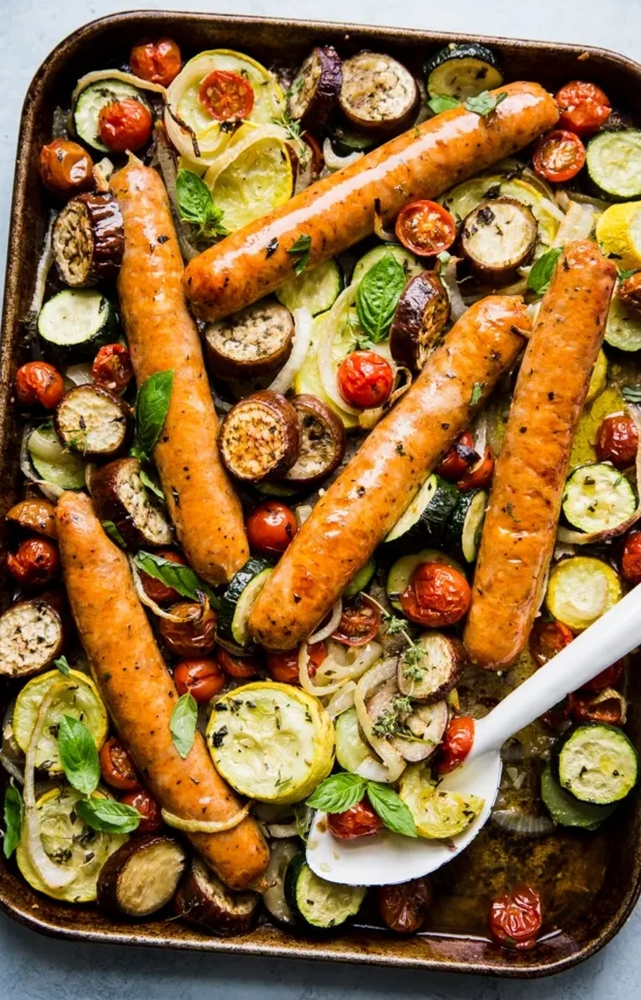

Ratatouille Sheet Pan Dinner With Sausage

Description
This sheet pan recipe celebrates all of the olive oil soaked flavors of the French country classic,
but is bulked up into a one pan meal thanks to the addition of hearty itailian sausages.
Ingredients
- 4-5 itailian sausage links
- 1 onion, sliced
- 1 small zucchini, sliced
- 1 small yellow squash, sliced
- 1 small eggplant, sliced
- 1 pint cherry tomaoes
- 4 garlic cloves, smashed
- 1/2 cup olive oil
- 1 tsp salt
- 1 tbsp fresh basil, minced
- 1 tbsp fresh thyme, minced
Steps
- Heat over to 400.
- Place onion, zucchini, squash, eggplant, tomatoes and garlic on a rimmed baking sheet.
- Drizzle with your olive oil and sprinkle on the salt and thyme. Toss until evenly coated.
- Nestle the sausages into the veggies and bake for 40 minutes until the vegetables are very tender and the sausage is browned.
- Sprinkle with fresh basil and serve either by itself, simple pasta or creamy polenta.